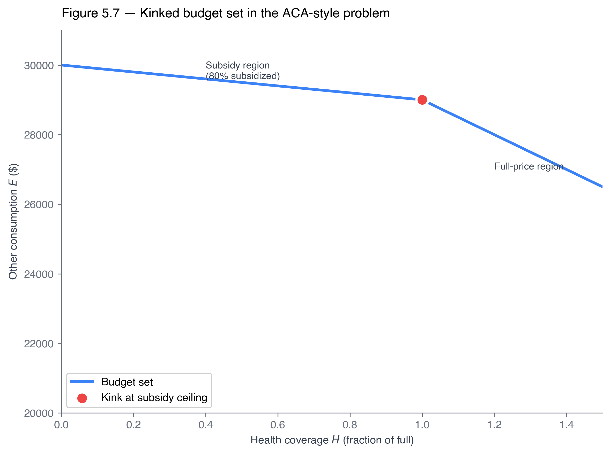

ECON 2316 • Microeconomic Theory • Chapter 5
Constrained Choice and Utility Maximization
From bent budget lines to the Lagrangian — six closed-form demand systems, a kink that costs the federal government \$70B per year, and a multiplier borrowed from celestial mechanics.
Dr. Richeng Piao
Department of Economics
Northeastern University — 100 min
Learning Objectives
By the end of class today, you will be able to…
5.1
Formalize the budget set \(B(p, I)\) and the budget constraint; predict the rotation/shift caused by price and income changes. (Bloom L3)
5.2
State and derive the two equivalent FOCs of an interior optimum: \(\mathrm{MRS} = p_1/p_2\) and \(MU_1/p_1 = MU_2/p_2 = \lambda\). (Bloom L4)
5.3
Set up and solve the Lagrangian \(\mathcal{L} = U + \lambda(I - p_1 x_1 - p_2 x_2)\); interpret \(\lambda^*\) as the marginal utility of income (utils/\$). (Bloom L4)
5.4
Derive closed-form Marshallian demand for the four canonical utility families — Cobb-Douglas, perfect substitutes, perfect complements, quasilinear. (Bloom L4)
5.5
Diagnose corner solutions and kinked-budget optima (KKT preview); apply to labor-leisure, ACA APTC, and SNAP. (Bloom L5)
§5.1 The Budget Constraint
15 min · What the consumer can afford — and why real budgets bend
The Consumer's Income and the Budget Constraint
The budget constraint is the curve of every consumption bundle the consumer can afford when spending all of their income. Plotted alongside indifference curves to find the optimum.
Step 1 — Two-good income identity
\[\text{Income} \;=\; P_X Q_X + P_Y Q_Y\]
Step 2 — Solve for \(Q_Y\) (slope-intercept)
\[Q_Y \;=\; \dfrac{\text{Income}}{P_Y} \;-\; \dfrac{P_X}{P_Y} \, Q_X\]
Sarah's budget — \(I=\$50\), \(P_L=\$5\), \(P_B=\$10\)
\[Q_B \;=\; 5 \;-\; \tfrac{1}{2} \, Q_L\]
Intercepts \(A = (10, 0)\) and \(B = (0, 5)\), slope \(-P_L/P_B = -1/2\).

Sarah's budget set in (lattes, burritos) space — Goolsbee 4e Fig 4.3.
Factors that affect the budget constraint's position
The slope and position of the budget constraint are functions of two factors: income and relative prices.
1. Change in income
Shifts the budget constraint by changing the intercepts (both \(I/p_1\) and \(I/p_2\) scale by the same factor). Slope unchanged.
2. Change in the price of one good
Pivots the budget constraint by changing the slope (\(-p_1/p_2\)) and the affected good's intercept; the other intercept stays put.
Three changes to Sarah's burrito/latte budget on the next slide:
(a) Doubling of the price of lattes | (b) Doubling of the price of burritos | (c) Reduction in income by \(1/2\)
Figure 4.15 — Three changes to Sarah's budget constraint

(a) \(2 \times p_L\) (lattes)
\(Q_B = 5 - \tfrac{1}{2} Q_L\)
\(\to \;\; Q_B = 5 - Q_L\)
Pivot around \(B\); \(A \to A'\); slope steepens.
(b) \(2 \times p_B\) (burritos)
\(Q_B = 5 - \tfrac{1}{2} Q_L\)
\(\to \;\; Q_B = 5 - \tfrac{1}{4} Q_L\)
Pivot around \(A\); \(B \to B'\); slope flattens.
(c) \(\tfrac{1}{2} \times\) Income
\(Q_B = 5 - \tfrac{1}{2} Q_L\)
\(\to \;\; Q_B = 2.5 - \tfrac{1}{2} Q_L\)
Parallel inward shift; same slope.
The budget set, formally
\[B(p_1, p_2, I) = \{(x_1, x_2) \in \mathbb{R}^2_{+} \mid p_1 x_1 + p_2 x_2 \leq I\}\]
The set of bundles the consumer can afford — a triangle in two-good space, bounded by the non-negativity orthant and the budget line.
Boundary — the budget constraint
\[p_1 x_1 + p_2 x_2 = I\]
Anatomy
- \(x_1\)-intercept: \(I/p_1\) — spend everything on good 1
- \(x_2\)-intercept: \(I/p_2\) — spend everything on good 2
- Slope: \(-p_1/p_2\) — opportunity cost of good 1 in units of good 2
Comparative static: price rotation
\(p_1\) rises with \(p_2\) and \(I\) held fixed:
- \(x_1\)-intercept \(I/p_1\) falls — constraint pivots inward along the \(x_1\) axis.
- \(x_2\)-intercept \(I/p_2\) unchanged — pivot point is on the \(x_2\) axis.
- Slope \(-p_1/p_2\) becomes more negative — constraint is steeper.
Price rotation = same income, different relative prices ⇒ the menu of feasible trade-offs changes.

Figure 5.2 — \(p_1\) rises ⇒ pivot inward along \(x_1\) axis.
Comparative static: income parallel shift
\(I\) rises with both prices held fixed:
- Both intercepts rise proportionally.
- Slope \(-p_1/p_2\) unchanged — no change in relative prices.
- Outward parallel shift — the consumer can afford strictly more of every good.
Income shift = same relative prices, more money ⇒ pure income effect, no substitution effect.

Figure 5.3 — \(I\) rises ⇒ parallel outward shift, same slope.
Equiproportional scaling — nothing happens
Scale \((p_1, p_2, I)\) by any factor \(\alpha > 0\). Then the new constraint is
\[\alpha p_1 x_1 + \alpha p_2 x_2 = \alpha I \;\;\iff\;\; p_1 x_1 + p_2 x_2 = I.\]
Both sides divide by \(\alpha\). The budget set is identical. Doubling everything is the same as doubling nothing.
Vocabulary
\(B(p, I)\) is homogeneous of degree zero in \((p, I)\). Demand inherits the property: \(x_i^*(\alpha p, \alpha I) = x_i^*(p, I)\).
Why this matters. Pure inflation — all prices and wages move proportionally — leaves real consumption unchanged in this model. The Phillips-curve story is about relative price stickiness, not the homogeneity property itself.
§5.1.4 — Lin's Claude API budget: where the kink comes from
Setup
Lin (econ-CS double major) has \$30/week between lattes \(L\) at \$5 and Claude API tokens \(T\) (millions). Tier pricing: \$3/M for the first 5M tokens (Standard sync), then \$1.50/M beyond 5M (Batch API, 24h async).
Step 1 — Standard segment \((T \leq 5)\)
All tokens at standard rate. Spend \(5L + 3T = 30\):
\[T = 10 - \tfrac{5}{3}L \;\;\text{slope} = -\tfrac{5}{3}\]
Each latte forgone ⇒ \(5/3\!\approx\!1.67\) M tokens.
Step 2 — Batch segment \((T > 5)\)
First 5M at \$3/M, rest at \$1.50/M. Spend \(5L + 15 + 1.5(T-5) = 30\):
\[T = 15 - \tfrac{10}{3}L \;\;\text{slope} = -\tfrac{10}{3}\]
Each latte forgone ⇒ \(10/3\!\approx\!3.33\) M tokens (Batch).
Step 3 — The kink
The two segments meet at \(L = 3,\; T = 5\) — exactly where Lin has spent \$15 on tokens (5M at standard rate). Above the kink, each latte forgone now buys twice as many tokens. Budget line kinks outward.
Universal pattern. Volume discounts turn the relative price into a piecewise-constant function. Same structure: AWS S3 tiers · Costco bulk eggs · electricity tier-2 rates · Spotify family vs solo.
§5.1.4 — Lin's budget set, drawn

Reading the figure
Solid line — hypothetical standard-only BC from \((0,\,10)\) to \((6,\,0)\).
Dashed line — actual BC's discount extension from \((0,\,15)\) to the kink \((3,\,5)\).
Hatched zone — extra bundles unlocked by Batch pricing (the wedge).
Kink at \((3,\,5)\) — \$15 spent on tokens, exactly where Batch kicks in.
Diagnostic (preview §5.5)
Any optimum sits in green-or-hatched. Compare \(\mathrm{MRS}\) to both price ratios — \(3/5\) on the solid, \(1.5/5\) on the dashed — to find which segment (or the kink) wins.
§5.1.4 — Quantity limits: kinks from caps, not prices
A second way a budget constraint can kink: a hard limit on how much of one good a consumer is allowed to buy. Neither income nor prices change — the cap blocks bundles the consumer could still afford.
Effect on the budget constraint
The constraint goes horizontal at the cap quantity. Some bundles you can afford are now off-limits — a quantity restriction, not a price one.
Apply to Lin
Suppose Anthropic, her lab, or her parents impose a hard 5M-token weekly cap. Lin's income is still \$30, lattes still \$5, tokens still \$3/M Standard / \$1.50/M Batch — but the cap kicks in. What does her budget set look like now? (Next slide.)
Concrete real-world quantity-limit examples (iPhone launch, WWII rationing, COVID caps, AI rate limits) — see §5.1.4 closing «Other real-world kinks» slide.
§5.1.4 — What if Lin's API is rate-capped?

Reading the figure
Same \$30/week, same prices — but Anthropic, her lab, or her parents impose a 5M-token weekly cap.
Horizontal at \(T = 5\) — constraint is now flat for \(L \in [0, 3]\). Lin can't buy any tokens above the cap, regardless of how much money she has left.
Pink triangle = infeasible. The previous Batch wedge is now off-limits — bundles Lin can afford but can't buy.
On the horizontal segment, Lin has money left over — her budget no longer binds. Anywhere on that flat top, \(5L + 3T < 30\).
Teaser for §5.2
Lin will never optimally choose a bundle on the flat segment — she'd rather trade unspent dollars for lattes than throw them away. Can you see why before we tell you in §5.2?
§5.1.4 — Other real-world kinks — a gallery
Two families of kinked budgets. Quantity restrictions make the constraint go horizontal at the cap. Policy & market kinks bend the slope at thresholds or replace the continuous line with a discrete menu.
Quantity restrictions — horizontal cap
iPhone launch
Apple caps new-model orders at one per customer on launch day.
WWII rationing
Sugar, butter, gas, meat — fixed quotas via ration books (1942–1946).
COVID (2020)
Grocers capped toilet paper, sanitizer, formula — "limit 2 per customer."
AI rate limits (2025)
Anthropic / OpenAI cap tokens per minute & per day on free / Plus tiers.
Policy & market kinks — slope shift or discrete set
ACA APTC
Premium subsidy phases out at the income threshold — slope changes mid-line.
SNAP
~\$188/mo benefit (~41M Americans) creates a horizontal extension along the food axis.
Streaming bundles
Disney+/Hulu/Max bundle — discrete menu, not a continuous line.
Tax brackets
One kink per marginal-rate boundary — constraint is piecewise-linear.
Pattern
Whether the kink comes from a cap, a subsidy phase-out, an in-kind transfer, a bundle, or a tax bracket — the Lagrangian framework adapts piecewise: solve the FOCs on each smooth segment, then compare candidates at the kink. Full treatment in §5.5 and Appendix §5.A.
Walkthrough 5.1 — Alex's monthly entertainment budget
Problem
Alex has \$150 / month discretionary for entertainment, split between video games \(G\) (\$80 each) and Uber Eats deliveries \(U\) (\$30 each).
- (a) Write the constraint; find intercepts and slope.
- (b) If Alex plays 1 video game, how many Uber Eats deliveries?
- (c) Steam Summer Sale drops games to \$50. Re-derive the line.
Context: 2025 US average household total expenditure was \$78,535 (BLS CEX), of which entertainment makes up ~4.7%.
(a) Original constraint.
\[80G + 30U = 150 \;\;\Longleftrightarrow\;\; U = 5 - \tfrac{8}{3}G.\]
Intercepts: \(A = (0, 5)\) all food, \(B = (150/80, 0) = (1.875, 0)\) all games. Slope \(-p_G/p_U = -80/30 = -8/3 \approx -2.67\) — each game costs \(8/3\) Uber Eats deliveries.
(b) One game: \(\$80\) on the game, \$70 left for delivery \(\Rightarrow U = 70/30 = 7/3 \approx 2.33\). Point \(C = (1,\, 7/3)\).
Press Space to reveal each step · ↓ to advance to part (c).
Walkthrough 5.1 — Alex, part (c): Steam Summer Sale drops games \$80 → \$50
New constraint at \(p_G = 50\), \(p_U = 30\), \(I = 150\):
\[50G + 30U = 150 \;\;\Longleftrightarrow\;\; U = 5 - \tfrac{5}{3}G.\]
- Vertical intercept unchanged: \(A = (0, 5)\) — Uber Eats price didn't move.
- Horizontal intercept rises: \(D = (150/50, 0) = (3, 0)\) (was \(1.875\)).
- Slope flattens to \(-p_G/p_U = -5/3 \approx -1.67\) — each game now costs only \(5/3\) deliveries.
Geometric reading. The line pivots outward around the vertical intercept \(A\), opening the triangle \(ABD\) of newly feasible bundles. Whenever a price drops, the line rotates outward around the unaffected intercept.
Headline takeaway. The slope is always \(-p_G/p_U\) regardless of income; income changes shift the line parallel, price changes rotate it. Foundational for every later walkthrough.
Walkthrough 5.1 — Alex's budget constraint, drawn

Reading the four points
Point A \((0,\,5)\) — shared y-intercept. Income \$150 and Uber Eats price \$30 didn't change, so all-food bundle is unchanged.
B \((1.875,\,0)\) \(\to\) D \((3,\,0)\) — the all-games corner shifts outward because games got cheaper. Pivot is around A.
Point C \(\left(1,\,\frac{7}{3}\right)\) — the 1-game bundle from part (b), sits on the original BC. \$80 on the game, \$70 left for ~2.33 deliveries.
Takeaway
The triangle ABD — the wedge between the two BC lines — is the set of bundles the Steam sale newly puts within reach. Same income, same delivery price, just one good got cheaper.
Poll #1: Equiproportional price + income change
Suppose income doubles from \(I\) to \(2I\), and \(p_1\) doubles from \(p_1\) to \(2 p_1\), while \(p_2\) stays the same. What happens to the budget set?
60 sec to vote
Answer: D — \(x_1\) unchanged, \(x_2\) doubles
\[\frac{I'}{p_1'} = \frac{2I}{2p_1} = \frac{I}{p_1}, \qquad \frac{I'}{p_2'} = \frac{2I}{p_2} = 2 \cdot \frac{I}{p_2}.\]
The trap is C — equiproportional scaling leaves the budget set unchanged, but here only good 1's price scaled with income; good 2's relative price fell. Slope changes from \(-p_1/p_2\) to \(-2 p_1 / p_2\) — steeper. The set does grow, but only on the good-2 axis.
§5.2 The Consumer's Problem and the Tangency Condition
15 min · Two ways to write one optimum: slope form and ratio form
The consumer's problem
\[\max_{x_1, x_2 \geq 0} \; U(x_1, x_2) \quad \text{subject to} \quad p_1 x_1 + p_2 x_2 \leq I.\]
Existence (Weierstrass)
\(U\) continuous on a compact budget set ⇒ the max exists. The compactness comes from the budget being a closed, bounded triangle.
Uniqueness
\(U\) strictly quasi-concave (preferences strictly convex) ⇒ the maximizer is unique. Recovered from Ch 4 axiom 4.
The output: Marshallian demand functions \(x_1^*(p_1, p_2, I)\) and \(x_2^*(p_1, p_2, I)\) — the central objects of consumer theory.
Tangency condition — slope form
At an interior optimum, the highest indifference curve the consumer can reach is tangent to the budget line. Tangency means equal slopes:
Indifference-curve slope
\(-\mathrm{MRS}_{1,2} \;=\; -MU_1/MU_2\)
from implicit differentiation of \(U(x_1, x_2) = \bar{U}\), Ch 4
Budget-line slope
\(-p_1/p_2\)
opportunity cost of \(x_1\) in units of \(x_2\)
\[\boxed{\;\mathrm{MRS}_{1,2} \;=\; \dfrac{MU_1}{MU_2} \;=\; \dfrac{p_1}{p_2}.\;}\]
Geometric intuition. At a non-tangent point, the indifference curve crosses the budget line — slide along the budget line toward the steeper-IC side and the consumer reaches a higher curve. Tangency is the place where no such gain remains.
Equimarginal principle — ratio form
Rewrite the same FOC:
\[\dfrac{MU_1}{p_1} \;=\; \dfrac{MU_2}{p_2} \;=\; \lambda.\]
Marginal utility per dollar is the same for every good. If it weren't — say \(MU_1/p_1 > MU_2/p_2\) — the consumer would shift a penny from good 2 to good 1 and gain.
Generalizes to \(N\) goods: \(\;MU_i/p_i = \lambda\;\) for every \(i\). The slope form needs \(\binom{N}{2}\) pairwise equations; the ratio form needs just \(N\) parallel ones sharing the same \(\lambda\).

Figure 5.8 — equimarginal across three goods, common shadow value \(\lambda\).
\(\lambda\) is the marginal utility of income
If you handed the consumer one more dollar of income, how many additional utils would they extract from it (when re-optimizing)?
\[\boxed{\;\dfrac{\partial v(p, I)}{\partial I} = \lambda^*.\;}\]
Formal statement — the envelope theorem. Full proof: Math Appendix A.6. \(v(p, I)\) is the indirect utility function (the value of \(U\) at the optimum, as a function of \(p\) and \(I\)). Appendix Walkthrough W5.A1 will verify this numerically for Cobb-Douglas.
HU2 — Units matter.
\(\lambda\) is in utils per dollar, not utils, not dollars. Walkthrough W5.2 will produce \(\lambda^* \approx 0.10095\) utils/\$; Walkthrough W5.5 will produce \(\lambda^* = 12\) "dollars per discretionary hour" because the utility weights were chosen to make utils dollar-equivalent.
Why \(\lambda\) is interesting. It is the shadow price of the constraint — the value to the consumer of relaxing the budget by \$1. In production theory (Ch 7), the same multiplier becomes the firm's shadow value of a relaxed resource constraint.
Think-pair-share #1 — Why two forms?
In your group, decide:
- Which formulation — slope (\(\mathrm{MRS} = p_1/p_2\)) or ratio (\(MU_i/p_i = \lambda\)) — generalizes more cleanly to five goods? Justify.
- For Cobb-Douglas \(U = x_1^\alpha x_2^{1-\alpha}\), which form has shorter algebra? Why?
Think 90s · Pair 90s · Random call × 2
Press ↓ to reveal sample answers.
Bloom L4
TPS #1 — Sample answers
Q1 — N-good generalization
Ratio form wins. \(N\) parallel equations \(MU_i/p_i = \lambda\) plus one budget — that's \(N + 1\) equations, \(N + 1\) unknowns (\(x_1, \ldots, x_N, \lambda\)). The slope form needs every pairwise \(\mathrm{MRS}_{i, j} = p_i/p_j\) and gives you \(\binom{N}{2}\) equations with redundancy.
Q2 — Cobb-Douglas algebra
Ratio form wins again. \(MU_i = \alpha_i U / x_i\), so \(MU_i/p_i = \alpha_i U / (p_i x_i)\). Setting all \(N\) equal gives \(p_i x_i / \alpha_i = p_j x_j / \alpha_j\) — expenditure shares proportional to exponents, the signature Cobb-Douglas closed form pops out in one step.
Pattern. The slope form is geometrically cleaner; the ratio form is algebraically cleaner. The Lagrangian is the unified statement — both forms fall out as different rearrangements of its FOCs.
§5.3 The Lagrangian Method
15 min · The auxiliary variable that does all the work
The Lagrangian
\[\mathcal{L}(x_1, x_2, \lambda) \;=\; U(x_1, x_2) \;+\; \lambda \big( I - p_1 x_1 - p_2 x_2 \big).\]
Sign convention: constraint written as \(I - p_1 x_1 - p_2 x_2 \geq 0\) — "you can spend up to \(I\)"; \(\lambda \geq 0\).
FOC 1
\(\partial \mathcal{L}/\partial x_1 = MU_1 - \lambda p_1 = 0\)
FOC 2
\(\partial \mathcal{L}/\partial x_2 = MU_2 - \lambda p_2 = 0\)
FOC \(\lambda\)
\(\partial \mathcal{L}/\partial \lambda = I - p_1 x_1 - p_2 x_2 = 0\)
From FOC 1 and FOC 2: \(\;MU_1/p_1 = \lambda = MU_2/p_2\). The equimarginal principle is the FOC of the Lagrangian.
Visualizing the Lagrangian optimum

Figure 5.1 — Lagrangian explorer: budget line, indifference curves, tangency point, and \(\lambda^*\).
Cobb-Douglas \(U = x_1^{1/3} x_2^{2/3}\), \(p_1 = 4\), \(p_2 = 6\), \(I = 60\): tangency at \((5, 20/3)\), \(\lambda^* \approx 0.10095\). We'll derive every number on the next four slides.
Why the multiplier \(\lambda\) exists
Geometric intuition
At the optimum, the gradient of \(U\) points "uphill" along the indifference curves; the gradient of the constraint \(g(x) = p_1 x_1 + p_2 x_2 - I\) is just the price vector \((p_1, p_2)\). Parallelism of the two gradients is what tangency means:
\(\nabla U \;=\; \lambda \nabla g.\)
Algebraic intuition
Any move along the constraint satisfies \(dx_2 = -(p_1/p_2)\, dx_1\). The change in utility from that move is \(dU = MU_1 \, dx_1 + MU_2 \, dx_2 = (MU_1 - (p_1/p_2) MU_2) dx_1\). At the optimum this is zero for every \(dx_1\) — that is the FOC.
Subtle point. The Lagrangian is not "U with a penalty for breaking the constraint." It is the algebraic encoding of "\(\nabla U\) and \(\nabla g\) point the same way at the optimum." The multiplier \(\lambda\) is the constant of proportionality — full derivation in Math Appendix A.5.
Joseph-Louis Lagrange (1736–1813)
Giuseppe Lodovico Lagrangia — born in Turin, succeeded Euler at the Berlin Academy by his late twenties. Mécanique Analytique (1788) is the founding text of analytical mechanics.
The constrained-mechanics move
A particle constrained to a surface; a pendulum at fixed length. Introduce an auxiliary variable — the multiplier — that encodes the force the constraint exerts. The math: identical to \(\partial \mathcal{L}/\partial x_i = MU_i - \lambda p_i = 0\).
Hicks & Allen (1934) — tracing back to Slutsky (1915) — noticed the parallel. A consumer constrained to a budget line is mathematically identical to a particle constrained to a surface. Lagrange's "constraint force" became the economist's "marginal utility of income."
From the Mécanique preface
“No diagrams will be found in this work.”
A deliberate rejection of Newton's and Euler's geometric style: mechanics, properly axiomatized, is a branch of pure analysis.
The Lagrangian you'll use to solve every constrained-choice problem in this book is, literally, a two-and-a-half-century-old idea borrowed from celestial mechanics.
Poll #2: Doubling utility
Suppose you re-label every utility number by doubling it: the new function is \(V(x_1, x_2) = 2 U(x_1, x_2)\). Same prices, same income. What happens to \(\lambda^*\) at the optimum?
60 sec to vote
Answer: A — \(\lambda^*\) doubles
New FOC: \(\partial V / \partial x_i = 2 \cdot MU_i = \lambda' p_i\). So \(\lambda' = 2 MU_i / p_i = 2 \lambda\). Bundle \((x_1^*, x_2^*)\) does not change — the FOC ratios \(MU_i/MU_j\) are invariant to monotonic transformations, so the optimum is the same. But \(\lambda\) carries units of utils per dollar — double the utility scale, double \(\lambda\).
Trap (B). Many students confuse "demand is ordinal-invariant" with "every Lagrangian-derived quantity is ordinal-invariant." Demand is; \(\lambda\) isn't. Units matter (HU2).
§5.4 Worked Examples — Four Canonical Utility Families
25 min · Six anchor walkthroughs, closed forms for every family
Walkthrough 5.2 — Cobb-Douglas: setup
Problem
\(U(x_1, x_2) = x_1^{1/3} x_2^{2/3}\), \(p_1 = 4\), \(p_2 = 6\), \(I = 60\). Find \((x_1^*, x_2^*, \lambda^*)\).
Lagrangian
\[\mathcal{L} = x_1^{1/3} x_2^{2/3} + \lambda (60 - 4 x_1 - 6 x_2).\]
First-order conditions:
\[\dfrac{1}{3} x_1^{-2/3} x_2^{2/3} = 4 \lambda\]
\[\dfrac{2}{3} x_1^{1/3} x_2^{-1/3} = 6 \lambda\]
\[4 x_1 + 6 x_2 = 60\]
Three equations, three unknowns. Take the FOC ratio to eliminate \(\lambda\) first — that's the standard play.
Press Space to reveal · ↓ to advance to the solve slide.
Walkthrough 5.2 — Cobb-Douglas: solve
Step 1 — Divide FOC1 by FOC2
\[\dfrac{(1/3) x_1^{-2/3} x_2^{2/3}}{(2/3) x_1^{1/3} x_2^{-1/3}} = \dfrac{4}{6} \;\Rightarrow\; \dfrac{1}{2} \cdot \dfrac{x_2}{x_1} = \dfrac{2}{3} \;\Rightarrow\; x_2 = \tfrac{4}{3} x_1.\]
Step 2 — Substitute into the budget
\(4 x_1 + 6 \cdot \tfrac{4}{3} x_1 = 12 x_1 = 60 \;\Rightarrow\; x_1^* = 5\)
Solution
\[\boxed{\;x_1^* = 5, \;\; x_2^* = \tfrac{20}{3} \approx 6.67, \;\; \lambda^* = \tfrac{\sqrt[3]{6}}{18} \approx 0.10095.\;}\]
Step 3 — Check
Budget: \(4(5)+6(20/3)=60\) ✓ | shares \(=\) exponents: \(20/60 = 1/3\), \(40/60 = 2/3\) ✓ | tangency \(\mathrm{MRS} = 2/3 = p_1/p_2\) ✓

Figure 5.5 — Cobb-Douglas demand at \(\alpha=1/3\).
General Cobb-Douglas closed form (CC2): \(\;x_i^*(p, I) = \alpha_i I / p_i.\;\) Budget shares = exponents — the signature prediction.
Walkthrough 5.3 — Perfect complements: ride the ridge
Problem
\(U(x_1, x_2) = \min(2 x_1, 3 x_2)\), \(p_1 = 4\), \(p_2 = 6\), \(I = 48\).
Indifference curves are L-shaped — kinks along the ridge condition \(2 x_1 = 3 x_2\). The standard FOCs of \(\min\) don't exist at the kink, but the optimum is well-defined: nobody would ever buy extra of the good in surplus.
Two equations: ridge \(x_2 = 2 x_1 / 3\) and budget \(4 x_1 + 6 x_2 = 48\). Substitute: \(4 x_1 + 4 x_1 = 8 x_1 = 48\).
\[\boxed{\;x_1^* = 6, \;\; x_2^* = 4, \;\; U^* = 12.\;}\]
Checks. Spend \(4(6)+6(4)=24+24=48\) ✓. Ridge \(2(6)=3(4)=12\) ✓. \(U^* = \min(12, 12) = 12\).
Lesson. Utility maximization is more general than the differentiable tangency condition. When tangency doesn't apply, use the geometry of the indifference map. Here: ride the ridge until you hit the budget.
Walkthrough 5.4 — Perfect substitutes: corner solution
\(U(x_1, x_2) = 2 x_1 + 3 x_2\), \(p_1 = 1\), \(p_2 = 2\), \(I = 10\).
MRS is constant: \(MU_1/MU_2 = 2/3\). Price ratio \(p_1/p_2 = 1/2\). Compare marginal utility per dollar:
- \(MU_1/p_1 = 2/1 = 2\)
- \(MU_2/p_2 = 3/2 = 1.5\)
Good 1 delivers more utility per dollar ⇒ spend everything on good 1:
\[\boxed{\;x_1^* = 10, \;\; x_2^* = 0, \;\; U^* = 20.\;}\]
Tangency fails — the model isn't broken, the optimum is on the boundary.

Figure 5.4 — corner at \(x_2 = 0\); knife-edge case (MRS = p ratio) yields a continuum of optima.
Walkthrough 5.5 — Maya's labor-leisure tradeoff: setup
The story
Maya, freelance designer (Ch 1). 168 hr/wk; sleep 56, class 15 ⇒ 97 discretionary hours. Split among study \(s\), paid work \(h\), leisure \(\ell\). Wage \$18/hr, no other income, consumption \(c = 18 h\).
\[U(s, h, \ell) = 60\, g(s) + 96 \ln(18 h) + 732 \ln \ell.\]
\(g(s) = 0.2 s\) for \(s \leq 30\) (linear regime, \$12/hr marginal); \(g(s) = 6 + 0.05(s - 30)\) beyond (plateau, \$3/hr).
Lagrangian
\[\mathcal{L} = 60 g(s) + 96 \ln(18 h) + 732 \ln \ell + \lambda(97 - s - h - \ell).\]
Working in dollar-equivalent utility units: \(\lambda\) reads as "\$/discretionary hour."
HU6. Weights \(\{60, 96, 732\}\) are calibrated to match ATUS time-use data — a deliberate modeling choice. Calibration vs structural estimation: Ch 6 / Ch 13.
Walkthrough 5.5 — Maya: solve
FOCs assume linear-\(g\) regime, \(s^* \leq 30\).
Step 1 — \(\lambda\) from the study FOC
\(\partial \mathcal{L}/\partial s = 60 \cdot 0.2 - \lambda = 0 \;\Rightarrow\; \boxed{\lambda^* = 12}\)
Step 2 — \(h^*\) and \(\ell^*\) from the work + leisure FOCs
\(96/h - \lambda = 0 \Rightarrow h^* = 96/12 = 8\) | \(732/\ell - \lambda = 0 \Rightarrow \ell^* = 732/12 = 61\)
Step 3 — \(s^*\) from the time budget
\(s^* = 97 - 8 - 61 = 28\)
Solution
\[\boxed{\;s^* = 28, \;\; h^* = 8, \;\; \ell^* = 61 \text{ hr/wk}, \;\; \lambda^* = \$12/\text{hr}.\;}\]
Regime check: \(s^* = 28 \leq 30\) ✓. ATUS 2024 ~21.7 hr/wk educational activities for full-time students — \(s^* = 28\) plausible for a freelance designer.

Figure 5.6 — Maya's three-use time budget.
Equimarginal check. \(\$12/\text{hr}\) at every margin: study (\$60 × 0.2), work (\$96/8), leisure (\$732/61). Same number everywhere — this is the equimarginal principle in dollar units.
What if Maya's wage rises 20%?
Re-solve W5.5 with wage \$24/hr instead of \$18/hr. The new utility includes \(96 \ln(24 h)\) — consumption FOC becomes
\[\partial U/\partial h = 96 \cdot 24/(24 h) = 96/h.\]
The wage cancels out of the FOC. So \(\lambda^* = 12\) still, \(h^* = 8\) still, \(\ell^* = 61\) still, \(s^* = 28\) still — none of Maya's time allocation changes.
The Lagrangian is telling us something real.
In log-utility, the substitution effect (work more because each hour buys more consumption) and the income effect (work less because she's effectively richer) cancel exactly. This is the signature of unit elasticity of substitution between consumption and leisure.
Empirically? Sigurdsson (2025): Frisch elasticity ~0.4 (sub. dominates). Match the data in Ch 6 by replacing \(\ln c\) with \(c^{1-\sigma}/(1-\sigma)\), \(\sigma > 1\).
Application A1 picks up this thread in detail — slide 39.
Walkthrough 5.6 — Quasilinear: zero income effect
\(U(x_1, x_2) = \sqrt{x_1} + x_2\), \(p_1 = 0.5\), \(p_2 = 1\), \(I = 20\).
FOCs: \(1/(2\sqrt{x_1}) = 0.5 \lambda\), \(1 = \lambda\), \(0.5 x_1 + x_2 = 20\).
From FOC2: \(\lambda^* = 1\). From FOC1: \(\sqrt{x_1^*} = 1 \Rightarrow x_1^* = 1\). Budget: \(x_2^* = 19.5\).
\[\boxed{\;x_1^* = 1, \;\; x_2^* = 19.5, \;\; \lambda^* = 1.\;}\]
Crucially: \(x_1^*\) does not depend on \(I\). Double the income to 40 and \(x_1^*\) is still 1; \(x_2^*\) jumps to 39.5.

Figure 5.10 — quasilinear corner risk at low \(I\).
Why this matters. Quasilinear utility makes good \(x_2\) the numeraire that absorbs all income changes. This is the workhorse for partial-equilibrium welfare analysis (consumer surplus calculations in Ch 6 / Ch 11).
Walkthrough 5.A1 — Indirect utility and the envelope check (Appendix §5.B)
For Cobb-Douglas (W5.2) with \(\alpha = 1/3\), plug the Marshallian demand back into \(U\):
\[v(p_1, p_2, I) = \left(\dfrac{\alpha I}{p_1}\right)^{\alpha} \left(\dfrac{(1-\alpha) I}{p_2}\right)^{1-\alpha} = \alpha^\alpha (1-\alpha)^{1-\alpha} \cdot \dfrac{I}{p_1^\alpha p_2^{1-\alpha}}.\]
\(v\) is linear in \(I\) for Cobb-Douglas, so \(\partial v / \partial I\) is the constant coefficient on \(I\).
At \(\alpha = 1/3\), \(p_1 = 4\), \(p_2 = 6\):
\[\dfrac{\partial v}{\partial I} = \dfrac{(1/3)^{1/3} (2/3)^{2/3}}{4^{1/3} \cdot 6^{2/3}} = \dfrac{\sqrt[3]{6}}{18} \approx 0.10095.\]
\[\boxed{\;\dfrac{\partial v}{\partial I} = \lambda^* \approx 0.10095.\;}\]
Matches \(\lambda^*\) from Walkthrough W5.2 to four decimal places — the envelope theorem is verified numerically.
What the envelope theorem buys you. When \(I\) changes, the consumer re-optimizes — \(x_1^*\) and \(x_2^*\) both move. You might worry you need to track those movements to compute \(\partial v / \partial I\). The envelope theorem says you don't: only the direct effect of \(I\) on the constraint matters, which is exactly \(\lambda^*\). The indirect effects cancel by the FOCs.
Walkthroughs 5.7 & 5.8 — income scaling and \(N\)-good Cobb-Douglas
W5.7 — complements, \(I' = 96\)
Re-do W5.3 with income doubled to \(I' = 96\). Same ridge \(x_2 = 2 x_1 / 3\), new budget: \(8 x_1 = 96\).
\[\boxed{\;x_1^{*\prime} = 12, \;\; x_2^{*\prime} = 8.\;}\]
Both quantities exactly double. Demand is homogeneous of degree 1 in \(I\) for both Cobb-Douglas and perfect complements; only quasilinear has zero income effect on one good.
W5.8 — three-good Cobb-Douglas
\(U = x_1^{0.4} x_2^{0.3} x_3^{0.3}\), \(p = (5, 4, 3)\), \(I = 60\). Use the closed form \(x_i^* = \alpha_i I / p_i\):
\[\boxed{\;x_1^* = 4.8, \;\; x_2^* = 4.5, \;\; x_3^* = 6.\;}\]
Shares exactly equal the exponents: \(p_1 x_1^*/I = 0.4\), \(p_2 x_2^*/I = 0.3\), \(p_3 x_3^*/I = 0.3\). The structure generalizes to any \(N\).
Pattern. Adding goods doesn't change the structure of the Lagrangian — more FOCs, same logic. The Cobb-Douglas constant-budget-share prediction holds in arbitrary dimension. This is why Cobb-Douglas is the workhorse for empirical demand systems (CEX shares, Theory and Data TD1).
Poll #3: Zero income effect
Which utility family produces a Marshallian demand for good 1 that is completely independent of income, i.e. \(\partial x_1^*/\partial I = 0\) for all \(I\) large enough?
60 sec to vote
Answer: D — Quasilinear
For \(U = v(x_1) + x_2\) with \(v\) concave, the FOC \(v'(x_1) = \lambda p_1\) and \(1 = \lambda p_2\) together give \(v'(x_1^*) = p_1/p_2\) — income doesn't enter. All extra income flows to the numeraire \(x_2\).
Caveat. The "for all large \(I\)" qualifier matters: at low \(I\) the optimum can slide to a corner where \(x_2^* = 0\), and then \(x_1^*\) becomes income-dependent again (Problem 9).
§5.5–5.6 Corners, Kinks, and Applications
20 min · What happens when tangency fails — and where the kinks live in real policy
Three ways tangency fails — the diagnostic
Case 1: Linear preferences
\(U = ax_1 + bx_2\): constant MRS \(= a/b\). Compare to \(p_1/p_2\) — the corner with higher \(MU/p\) wins. W5.4.
Case 2: Non-negativity binds
Unconstrained tangency would push \(x_i < 0\) (infeasible). Optimum slides to the corner where \(x_i = 0\). Problem 9.
Case 3: Non-differentiable \(U\)
\(U = \min(\cdot)\): kink at the ridge \(ax_1 = bx_2\). FOCs don't apply — use ridge + budget. W5.3.
Two-good corner diagnostic. Check the candidate corners \((I/p_1, 0)\) and \((0, I/p_2)\):
- At \((I/p_1, 0)\): if \(MU_1/p_1 \geq MU_2/p_2\) there, that corner is the optimum.
- Symmetric at \((0, I/p_2)\).
- If neither corner satisfies its diagnostic, look for an interior tangency.
KKT preview (\(N\) goods). FOCs become inequalities \(\partial \mathcal{L}/\partial x_i \leq 0\) with complementary slackness \(x_i \cdot (\partial \mathcal{L}/\partial x_i) = 0\). Full development: Math Appendix A.5.
Appendix §5.A Applications — for your reference
Five worked applications in Appendix §5.A (relocated from the main chapter body in the 2026-05-17 restructure). We won't deep-dive in class — read these as the empirical anchors for the Lagrangian machinery.
A1 — Maya wage 20% ↑
Log-log utility ⇒ sub. and income effects cancel exactly, \(h^* = 8\) unchanged. Empirically Frisch ~0.4 (Sigurdsson 2025); model needs \(\sigma > 1\) to match.
A2 — ACA APTC kink
Piecewise-linear budget. Solve FOCs per segment, compare at kink. Empirical bunching muted by frictions (Handel-Kolstad-Spinnewijn 2019).
A3 — SNAP in-kind kink
Horizontal extension on food axis. Extra-marginal = SNAP = cash; infra-marginal = optimum on kink (Hoynes-Schanzenbach).
A4 — Streaming bundles
Disney/Hulu/ESPN+ menu → discrete budget set. Lagrangian degenerates: enumerate portfolios, pick the best.
A5 — Boston commute
Quasilinear utility on commute disutility. Mission Hill vs Back Bay (~\$877/mo gap) — replicable with current Zillow + ACS data.
Pattern across A2–A5
When budgets bend or jump, the Lagrangian adapts piecewise: solve smooth FOCs, evaluate at the kink/portfolio, pick the best. Tangency is not the diagnostic.
Full treatment in Appendix §5.A. Problems 10 (SNAP) and 11 (ACA) are Stretch (read-on-your-own, not in the graded MC bank).
Appendix §5.A — When the Budget Line Bends (if there's time)
December 2024 — CMS releases the headline numbers for the ACA's 2025 Open Enrollment Period:
24.3M
people selected a marketplace plan
\$619 → \$113
average premium, pre- vs post-APTC
42%
enrolled at ≤\$10/month
The APTC subsidy bends the consumer's budget line. The diagonal you drew in 1116 was a useful first picture — real budget sets have kinks.
Appendix §5.A — The diagonal that bends
Plot dollars on health coverage versus dollars on everything else. Without the APTC, every health-dollar costs one everything-else dollar — a clean diagonal. With the APTC, the federal government covers a chunk of each premium dollar below an income threshold and zero above it.
Result: the budget constraint is piecewise-linear with a kink. The optimum may sit on a smooth segment, on the kink, or at a corner.
HU1 — Bunching at kinks
Theory predicts the optimum often sits on the kink itself. Empirically, bunching at ACA / tax / SNAP kinks does appear (Saez 2010, Mortenson-Whitten 2020), but heterogeneously: stronger for self-employed, weaker for wage earners with set hours.

Figure 5.7 — ACA APTC kink in (health-coverage, all-other-goods) space.
HU4 — Frictions muddle the Lagrangian
Information frictions, inertia, defaults distort observed plan choices (Handel-Kolstad-Spinnewijn 2019). The frictionless model is the normative benchmark, not a literal prediction.
Ch 15 returns with risk aversion · Ch 16 with adverse selection · Appendix §5.A Application A2 has the full kink algebra.
Think-pair-share #2 — Pick a bent budget
In your group, pick one policy from: ACA APTC · SNAP · streaming bundles · progressive income tax. Then:
- Which utility family best fits a typical household's preferences in this context (Cobb-Douglas, perfect complements, perfect substitutes, quasilinear)? Justify.
- Where does the optimum likely sit — smooth segment, kink, corner, or discrete portfolio?
- What empirical pattern would you expect — bunching, distortion away from theory, or no observable signature?
Think 2 min · Pair 2 min · Random call × 3
Press ↓ for sample answers.
Bloom L5 — synthesis
TPS #2 — Sample answers
ACA APTC
Family: Cobb-Douglas in (H, E) with small \(\alpha_H\). Optimum: often at the kink for households near the threshold. Pattern: bunching predicted, muted by inertia and search frictions (HKS 2019).
SNAP
Family: Cobb-Douglas in (F, O). Optimum: kink for infra-marginal, smooth segment for extra-marginal. Pattern: Hoynes-Schanzenbach show substantial share of infra-marginal — "SNAP = cash" only in aggregate.
Streaming bundles
Family: Cobb-Douglas-like across genres; discrete budget. Optimum: one of the finite portfolios. Pattern: bundle adoption rates as a "soft" discrete-choice signature.
Progressive tax
Family: quasilinear in consumption + labor disutility. Optimum: bunching at bracket thresholds. Pattern: Saez 2010, Mortenson-Whitten 2020 — bunching detected for self-employed; muted/absent for wage earners (inflexible).
TD2 — How sticky is health-insurance re-optimization?
Handel, Kolstad, Spinnewijn (2019, AER)
Structural model: information frictions — choice complexity, inertia, salience of premium — distort observed plan choices materially away from the frictionless Lagrangian benchmark.
HKMS (2024, AER:Insights)
Dutch admin data: top 5% of decision-makers extract 3× the consumer surplus of the bottom 5%. Steep socioeconomic gradient in choice quality, driven by education and quantitative training.
Pedagogical point. The rational Lagrangian model is a normative benchmark, not a literal description of all consumer behavior. The descriptive empirical literature shows substantial inertia, especially when re-optimization is costly or defaults are sticky.
TD3 — How do students actually allocate time?
BLS ATUS 2024 · NSSE 2024 · ACHA-NCHA
- Educational activities (full-time students): 3.1 hr/day ~ 21.7 hr/wk
- Workdays they work: 8.4 hr/day
- Class-preparation (NSSE): 12–19 hr/wk across majors
- Sleep on weeknights (ACHA-NCHA): typically <8 hr
Maya's calibrated allocation: \(s^* = 28\), \(h^* = 8\), \(\ell^* = 61\) hr/wk.
Sits within the empirical range — slightly heavier on study than median, slightly lighter on work, leisure absorbing the remainder. Plausible for a freelance designer.
Problem 13 has students download ATUS microdata and compare to Maya's calibration — what would the weights \{96, 732\} have to be to match their personal time allocation?
Poll #4: Maya's wage rises 20% — synthesis
In the log-log Maya utility \(U = 60 g(s) + 96 \ln c + 732 \ln \ell\), her wage rises from \$18 to \$24/hr. What happens to her optimal work hours \(h^*\)?
90 sec to vote
Answer: C — effects cancel exactly
Log-utility on consumption has unit elasticity of substitution between consumption and leisure: the substitution effect (work more, each hour buys more) and the income effect (work less, she's effectively richer) cancel exactly. \(h^*\) stays at 8.
Why empirics says A. Real labor-supply data (Sigurdsson 2025: Frisch elasticity ~0.4) shows hours rising with wage — substitution dominates. To match this in the Lagrangian, replace \(\ln c\) with \(c^{1-\sigma}/(1-\sigma)\), \(\sigma > 1\): consumption-utility more concave than log breaks the offset. Full Slutsky decomposition in Ch 6.
Walkthrough headline summary
| Element | Setup | Headline number |
|---|---|---|
| W5.1 Braden's budget | \(p_R=5\to 4\), \(p_C=1\), \(I=20\) | Pre: \(A(4,0)\), \(B(0,20)\), slope \(-5\); post: \(D(5,0)\), slope \(-4\) |
| W5.2 Cobb-Douglas | \(U=x_1^{1/3} x_2^{2/3}\), \(p_1=4, p_2=6, I=60\) | \(x_1^*=5, x_2^*=20/3, \lambda^*\approx 0.10095\) |
| W5.3 Complements | \(U=\min(2x_1, 3x_2)\), \(p_1=4, p_2=6, I=48\) | \(x_1^*=6, x_2^*=4, U^*=12\) |
| W5.4 Substitutes corner | \(U=2x_1+3x_2\), \(p_1=1, p_2=2, I=10\) | \(x_1^*=10, x_2^*=0, U^*=20\) |
| W5.5 Maya labor-leisure | Three-use time, \(\lambda\) reads as \$/hr | \(s^*=28, h^*=8, \ell^*=61, \lambda^*=\$12\)/hr |
| W5.6 Quasilinear | \(U=\sqrt{x_1}+x_2\), \(p_1=0.5, p_2=1, I=20\) | \(x_1^*=1, x_2^*=19.5, \lambda^*=1\) |
| W5.7 \(I\)-doubling | Same as W5.3 with \(I' = 96\) | \(x_1^{*\prime}=12, x_2^{*\prime}=8\) (both double) |
| W5.8 Three-good Cobb-Douglas | \(U=x_1^{0.4}x_2^{0.3}x_3^{0.3}\), \(p=(5,4,3), I=60\) | \(x_1^*=4.8, x_2^*=4.5, x_3^*=6\) |
| W5.A1 Indirect utility (appendix §5.B) | Cobb-Douglas, \(\alpha=1/3\) | \(\partial v/\partial I \approx 0.10095 = \lambda^*\) (envelope) |
What's next — Ch 6 preview
Slutsky decomposition
Decompose any price change into substitution + income effects. Sub. effect always ≤ 0 (own-price) regardless of preferences.
Hicksian demand
Compensated demand — expenditure minimized at fixed utility. The dual to Marshallian demand. Roy ↔ Shephard.
Aggregation
Sum individual demands to market demand. When does aggregation preserve representative-agent structure?
Elasticity zoo
Own-price, cross-price, income elasticities; Engel curves; substitutes vs complements algebraically defined.
Key takeaways
- The Lagrangian \(\mathcal{L} = U + \lambda(I - p \cdot x)\) is the unifying tool for constrained consumer choice. Three FOCs: two stationarity + one budget.
- Two equivalent forms of the interior optimum: slope (\(\mathrm{MRS} = p_1/p_2\)) and ratio (\(MU_i/p_i = \lambda\)). Slope cleaner geometrically, ratio cleaner algebraically and generalizes to N goods.
- \(\lambda^*\) is the marginal utility of income — utils per dollar, the shadow price of the budget. Envelope theorem: \(\partial v / \partial I = \lambda^*\).
- Four canonical utility families, four closed-form demands: Cobb-Douglas (constant shares), perfect complements (ride the ridge), perfect substitutes (corner), quasilinear (zero income effect on the non-numeraire).
- Real budget sets bend. The Lagrangian adapts piecewise: solve FOCs on each smooth segment, evaluate at the kink, compare. Empirical bunching is muted by frictions.
Key terms
- Budget set \(B(p, I)\)
- Budget constraint
- Marshallian demand \(x_i^*(p, I)\)
- Tangency condition
- Equimarginal principle
- Lagrangian \(\mathcal{L}\)
- Lagrange multiplier \(\lambda\)
- Marginal utility of income
- Corner solution
- Karush-Kuhn-Tucker (KKT) condition
- Indirect utility function \(v(p, I)\)
- Envelope theorem
- Kinked / discrete budget set
All terms defined inline at first appearance in the chapter; consolidated glossary in the textbook end-matter.
Exit ticket — before you leave
On the index card (or Canvas Quick Quiz):
- State one way in which tangency \(\mathrm{MRS} = p_1/p_2\) can fail at the consumer's optimum — and what the correct diagnostic is in that case.
- Interpret \(\lambda^*\) in one sentence, with correct units. (Don't just write "marginal utility of income" — what does that mean?)
Drop on the way out, or submit on Canvas before 11:59 PM. Counts toward attendance.
Resources for going deeper
Textbook anchors
- Goolsbee, Levitt, Syverson 4e — Ch 4 (Lagrangian, four families)
- Mas-Colell, Whinston, Green — Ch 3 (consumer theory, formal)
- Varian Intermediate Microeconomics — Ch 5
Math + visual
- Khan Academy — "Lagrangian multipliers" (calculus playlist)
- 3Blue1Brown — "The Lagrange multiplier" video essay
- Math Appendix A.5–A.6 (Lagrangian, envelope, bordered Hessian)
Empirical anchors
- BLS Consumer Expenditure Survey (Problem 12 data)
- BLS American Time Use Survey (Problem 13 data)
- CMS 2025 ACA Open Enrollment Report
Frontier papers
- Handel, Kolstad, Spinnewijn (2019, AER) — choice frictions
- Sigurdsson (2025, AEJ:Policy) — Frisch elasticity
- Saez (2010), Mortenson-Whitten (2020) — bunching
Next class — Ch 6: Demand, Elasticity, and the Slutsky Decomposition
Bring with you
- The four closed-form demands from today
- The \(\lambda^* \approx 0.10095\) envelope number (we will use it)
- Maya's calibration \(\{60, 96, 732\}\) (returns in the Slutsky derivation)
Pre-read
- Ch 6 §6.1–6.2 (Slutsky, Hicksian)
- Math Appendix A.6 (envelope theorem proof)
- Optional: Goolsbee 4e Ch 5 for income/substitution intuition
HW §5 due before next class. Problems 1–5 are required (Cobb-Douglas, complements, substitutes corner, three-good, quasilinear). Problems 10, 11 (SNAP and ACA kinks) are optional challenge. See Canvas for the gradebook structure.
Questions?
Office hours · Tue/Thu 2:00–3:30 pm · 308 Lake Hall
“No diagrams will be found in this work.” — Lagrange, 1788. (We use plenty.)